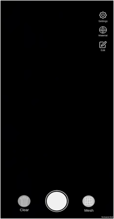
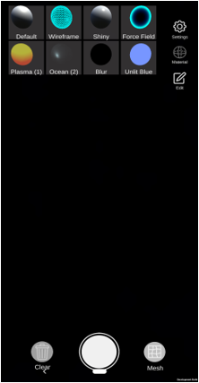
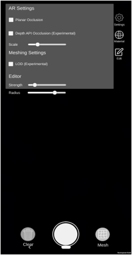

Augmented Reality (AR) technology is constantly evolving, with
notable recent improvements in standalone headsets and perhaps
most interestingly, mobile devices. Considering the potential of
AR within gaming and interactive media, the importance of scaling
down to more accessible lower cost interfaces is a vital topic of
research. Mixing the digital and physical can result in immersive,
unique experiences. With the standard of AR development tool-kits
being so high it is easier than ever to release AR applications.
Without the heavy costs of standalone headsets, mobile AR is
making a splash in the industry.
These AR experiences change
massively depending on the user’s environment. One of the goals
of this project was how these differences in the user’s
environment could be used to create unique and immersive experiences.
By using feature points within the environment, the environment
can be reconstructed digitally, taking advantage of the user’s
unique space. The user can then sculpt and interact with the
resulting mesh in a similar way as VR solutions like Oculus
Medium (2016), but with a lower barrier of entry.
Reconstruction of environments from tracked point data is a well
researched area, but commercial solutions are generally limited
to devices with specialised sensors such as the iPad pro and
standalone AR headsets. This project aims to explore real-time
meshing and reconstruction in Augmented Reality in a more
accessible way which does not require specialised sensors but
simply a mobile phone. I first elaborate on the relevant research
into the respective fields, then define the project plan as well
as the requirements of the system, and finally elaborate on the
implementation and results of the AR mobile application.
About The Project
Surface Reconstruction
AR UI DESIGN




References
- [1] Bourke,P.(1994).Polygonisingascalarfield.
- [2] Lorensen, W. Cline, H. (1987). Marching Cubes: A High Resolution3D Surface Construction Algorithm. Computer Graphics, 21 (4), pp.163-169.
- [3] D ̈urst, M.J., (1988). Additional reference to “marching cubes”(letters).Computer Graphics, 22(2), 72-73.
- [4] Lengyel, E. (2010).“Voxel-Based Terrain for Real-Time Virtual Simula-tions”. PhD diss., University of California at Davis.
- [5] Tao, J. Losasso, F. Schaefer, S. Warren, J. (2002).Dual Contouring ofHermite Data. Rice University.
- [6] Schaefer, S. Tao, J. Warren, J. (2007). Manifold Dual Contouring. IEEETrans. Vis. Comput. Graph.
- [7] Berger, M. Tagliasacchi, A. Seversky, L. M., Alliez, P. Guennebaud,G. Levine, J. A.. Sharf, A. Silva, C. T.. (2016). A Survey of SurfaceReconstruction from Point Clouds.
- [8] Hoppe, H. DeRose, T. Duchamp, T. McDonald, J. Stuetzle, W.(1992).Surface Reconstruction from Unorganised Points. University ofWashington.
- [9] Geiss, R. (2007). Chapter 1. Generating Complex Procedural TerrainsUsing the GPU, GPU Gems 3. Nvidia Corporation.
Other Work

©Michael Cruz Cervera